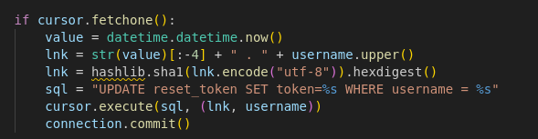

Clock
From nmap I know that there is a few open ports: 22, 80, 3324, 8000, 8080

Looks like we cannot really access it. Same on port 8000.
I went to robots.txt on port 8000 and found the first flag
Let's run ffuf to find more pathes.
ffuf -w /usr/share/wordlists/seclists/Discovery/Web-Content/big.txt -u "http://clocky.thm:8000/FUZZ.zip" -c -t 300
I used this command and found index.zip file.
Let's check it out.
Now we got the second flag
Let's check the app.py file
Here is couple of interesting things:
connection = pymysql.connect(host="localhost",
user="clocky_user",
password=db,
db="clocky",
cursorclass=pymysql.cursors.DictCursor)
1. @app.route("/administrator", methods=["GET", "POST"])
2. @app.route("/forgot_password", methods=["GET", "POST"])
3. @app.route("/password_reset", methods=["GET"])
# Not done (11/05-2023, clarice)
# user_provided_token = request.args.get("TEMPORARY")
Also, from the app.py file we know that the app is running on port 8080.

These are the most interesting lines in the code for us:

Let's break it down.
It takes current time than adds " . " and username in uppercase. So in result before hasing the line would look like this:
2024-05-14 14:36:49.21 . CHARLIE
Than it hashes it, so eventually it looks like this:
79f916cf80f25b31cc1e79f1fe578410d0525f52
And then the line becomes a new token for the username.
I am going to try to write a python script that will do 3 things:
1. Capture the time
2. Create the a token
3. Make a post request to the page to update the token for particular user.
The problem is that I am not sure if that is going to be fast enough. The other way is to bruteforce it.
This way it didn't work, so I am going to create a script that will create all possible hashes for the last 10 seconds.